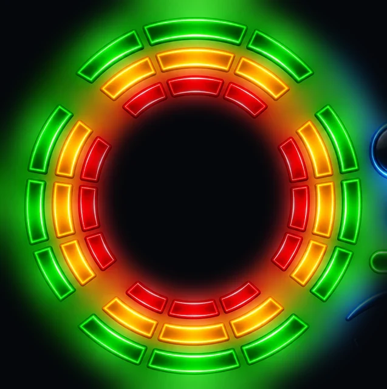
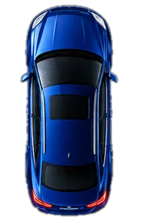

Voiture 3D
Rotation voiture
Phares
Ouverture des portes
Verglas possible
CarburantIndisponible
BatterieIndisponible
ExtérieurmétéoIndisponible
Position
-- / --
--°
Météo…
Ressenti --°Vent -- km/hHumidité --%
--km/h
--
km/h
0
-- km
Trajet
0.0km
0:00Durée
--Moy. km/h
Aucune lecture
CarburantIndisponible
BatterieIndisponible
ExtérieurmétéoIndisponible
MoteurIndisponible
AutonomieIndisponible
KilométrageIndisponible
CeintureIndisponible
Ouvrants et radars

ConducteurIndisponible
PassagerIndisponible
ArrièreIndisponible
CoffreIndisponible
CapotIndisponible
RadarsIndisponible
Information seulement. Rien n'est affiché tant que le poste ne le transmet pas.
--:--
--:--
Personnaliser depuis mon téléphoneScanne un code : compteurs, montres, météo, fonds et disposition se règlent sur ton téléphone, en direct
Accueil et widgets
Modifier l'écran d'accueilDéplacer, agrandir ou masquer les widgets
Ajouter un widgetNote, chrono, boussole, horloge, vitesse max, ou un widget de style
Styles (aperçu direct sur l'accueil)
Compteurs de vitesse36 cadrans réels, rangés par marque
Montres19 montres avec aiguilles à l'heure réelle
Horloges15 horloges numériques, heure et date en direct
Widgets voiture24 widgets : autonomie, consommation, batterie, températures, régime, carburant, pneus, boussole, musique, trajet, vitesse
Météo9 widgets météo + le widget classique
Radar de reculVoiture, style et couleur
Compteur de vitesse
Compteur de vitesseSimple ou cadran avec ton kilométrage. 16 cadrans au choix
Taille du compteurTu peux aussi le réduire dans le mode édition
Voiture 3D
Voiture 3D sur l'accueilTa voiture en 3D dans un showroom. Elle tourne et ses portes s'ouvrent avec les vraies.
Warnings sur la voiture 3DLes clignotants de la 3D clignotent. Ils suivent aussi les vrais si ton poste les détecte.
Showroom de nuitLe décor de la voiture 3D la nuit. Les LED du plateau prennent sa couleur.
Showroom de jourLe décor de la voiture 3D le jour.
Couleur de la carrosserieTeintes d'origine du constructeur
Plaque d'immatriculationBleue, noire ou masquée, avec ton département
Apparence
Fonds d'écranGalerie, ta photo, jour et nuit
PolicesHeure, date et textes
Thèmes et couleursClassique, Sport, Luxe, Minimal
Personnes et messages
ProfilsUn profil par personne : prénom, volant, couleur
Message d'accueilPhrase et mots magiques ({prenom}, {meteo}…)
Thème et couleurs
ThèmeAutomatique : nuit selon les horaires ci-dessous
Nuit selon le coucher du soleilSinon, les horaires ci-dessous sont utilisés
Début de la nuit
20 h
Début du jour
7 h
StyleUn appui change tout le look : couleurs, formes, police et animations
CouleurBoutons et éléments sélectionnés
Couleur des icônesChange le bleu des icônes et des boutons
Opacité des cartesPlus opaque = plus lisible en plein soleil
Luminosité
LuminositéRéglage de l'écran du launcher
Luminosité de tout le posteAutorise-le une seule fois pour que le réglage s'applique aussi dans CarPlay
Luminosité automatiqueBaisse l'écran la nuit et le remonte le jour
Luminosité de jour
Luminosité de nuit
Confort
Taille du textePlus grand = plus facile à lire en roulant
Gros boutonsAgrandit toutes les zones à toucher
Contraste renforcéTexte plus épais et cartes plus opaques, pour le plein soleil
Sons de confirmationUn petit clic quand tu touches un bouton
Polices
Police de l'heure et de la dateTouche pour essayer
Police de tout le resteTextes, boutons et widgets
Fond d'écran
Jour, phares éteints
Nuit, phares allumés
Nuit, phares éteints
Les photos que tu ne choisis pas sont déduites de celles que tu as choisies. Ces photos servent à l'accueil en 2D, quand la voiture 3D est coupée : le bouton des phares passe de phares éteints à phares allumés.
Fond depuis mon téléphoneChoisis une photo ou un fond d'écran de ton téléphone et envoie-le sur le poste (accueil, verrouillage ou profils)
Galerie de fonds d'écranTouche un fond pour l'utiliser en accueil, en écran de verrouillage ou pour l'écran des profils
Ma photo en fondUne image du poste ou d'une clé USB, recadrée en 16:9
Image et animations
Phares sur l'imageChange la photo de fond, sur le poste seulement
Animations
Ambiances météoPluie, neige, brume ou étoiles qui bougent autour de la voiture
Animation de démarragePhares qui clignotent, puis retour à l'accueil
Bluetooth
BluetoothVérification…
Appareils associés—
Associer ou gérer un appareilOuvre les réglages Bluetooth du poste
Navigation et CarPlay
NavigationWaze sur ton iPhone, via CarPlay
Je n'ai pas CarPlayLe bouton CarPlay est remplacé par Maps. Tu peux le changer dans les raccourcis.
Ton application CarPlayChoisis l'application qui lance CarPlay sur ton poste
Ma voiture
Nom affiché
Motorisation ou puissanceExemples : TDI 105, 1.6 HDi 90 ch, GTI 210 ch
Écris ce que tu veux, ça s'affiche tout de suite sur l'accueil.
Logo de la marqueAffiché à côté du nom de ta voiture
Kilométrage de la voitureTape celui de ton compteur : Cockpit l'additionne ensuite au GPS
Infos de la voiture
Page VéhiculePortes, carburant, batterie, huile
Mes statistiques de conduiteKilomètres, temps de conduite et vitesse moyenne de la semaine
Infos de la voitureDécouvre ce que ta voiture transmet au poste (portes, feux, température, kilométrage)
Tableau de bord
Si ta voiture ne transmet pas une information, tu peux la masquer ou saisir une valeur. Tu tapes juste le nombre : l'unité s'ajoute toute seule.
CarburantIndisponible, masquée ou ma valeur
BatterieIndisponible, masquée ou ma valeur
ExtérieurIndisponible, masquée ou ma valeur
MoteurIndisponible, masquée ou ma valeur
AutonomieIndisponible, masquée ou ma valeur
Kilométrage (page Véhicule)Indisponible, masqué ou ma valeur
CeintureIndisponible, masquée ou ma valeur
Alertes et radar
Alerte sonore porte ouverte ou ceintureUn bip quand tu roules avec une porte ouverte
Voix porte ouverte« Attention, une porte a été ouverte » à chaque ouverture
Radar de recul visuelImage avec la voiture vue de dessus en marche arrière
Entretien
Rappels d'entretienAffiche une bulle quand une échéance approche
Kilométrage actuelLe poste ajoute les kilomètres roulés (GPS)
Disposition et widgets
Disposition de l'accueilPlace de la voiture sur l'écran
Carte d'infosCarburant, batterie, température extérieure
Météo animéeTempérature, prévisions et animation
Vitesse GPSVitesse, direction et altitude du poste
Lecteur de musiqueTitre en cours et boutons (désactivé par défaut)
Autoriser l'accès aux notificationsNécessaire pour lire le titre et piloter la musique
Bouton des phares
Compteur de trajetDistance, durée et vitesse moyenne
Météo et alertes
Ville de la météoPosition automatique du poste, ou une ville de ton choix
Alerte verglasPrévient à 3 °C ou moins, avec une voix (température de la voiture ou de la météo)
Messages
Salut intelligentUn petit mot selon l'heure, la météo et ton dernier trajet
Message d'accueilÉcris ton message. Mots magiques : {salut} {prenom} {temp} {meteo} {heure} {date} {jours}
Conduite
Rappel de pauseUn message après une longue conduite
Après
2 h
Alerte de vitesseMessage vocal au-dessus de ta limite. Les limitations de la route ne sont pas affichées.
Limite
130 km/h
Raccourcis du bas
Choisis ce que chaque bouton ouvre. Réglages reste toujours disponible.
Voix et son
Volume du postePeut ne pas agir si le volume dépend du boîtier du poste
Message vocal au démarrage
Mon prénomDit dans le message vocal. Laisse vide pour un simple « Bonjour ».
Volume de la voix
Tester la voix
Langue
Change la langue de l'interface et du message vocal.
Unités et heure
UnitésTempérature en °C et vent en km/h, ou °F et mph
Format de l'heure
Cockpit
Créé par JOJOOFX
Contact
Guide d'utilisationTout savoir sur Cockpit, en images
Écran d'accueil par défautFait de Cockpit l'écran qui s'ouvre avec le bouton Accueil du poste
Besoin d'aide ?Écris à Jojoo, avec la version et le modèle du poste
Astuce du jourUne fonction à découvrir
NouveautésCe qui change dans cette version
Revoir l'essai guidéTrois bulles pour retrouver les bons gestes
CréditsModèle 3D de la Golf 6 : « GT Cars: Hyperspeed » (Sketchfab), licence CC-BY 4.0. Plateforme 3D : « Round Platform » par noortjeschuur (Sketchfab), licence CC-BY 4.0
Mises à jour
Vérifier une mise à jourRegarde si une nouvelle version existe
Nouvelle version disponible
Sauvegarde
Sauvegarder mes réglagesCrée un fichier à garder (clé USB ou téléphone)
Restaurer mes réglagesChoisis un fichier de sauvegarde
Partager ma configurationCrée un fichier pour un ami qui a la même voiture (sans tes infos personnelles)
Modifier l'écran d'accueilDéplacer, agrandir ou masquer les widgets
PersonnaliserCompteurs (36), montres, horloges, widgets voiture et météo, radar de recul. Tu vois le résultat tout de suite sur l'accueil.
ProfilsUn profil par personne : prénom, volant, couleur et code facultatif. Un choix s'affiche à chaque démarrage.
Écran
Résolution de l'écran
Taille de l'interfaceRéduit tout l'écran si l'interface paraît trop grande
100 %
Marges de l'écranSi les bords sont cachés par la façade du poste
0
Refaire l'assistantReprend les questions de départ (profil, langue, voiture…)
Mode démoRemplit l'accueil de valeurs d'exemple, pratique pour filmer l'écran
Pour les curieux
Infos partagées par CarCANVérifie ce que Cockpit lit sur un poste avec l'appli CarCAN : portes, coffre, radar, vitesse, température
Résolution de l'écranCe que voit réellement Android et l'interface
Diagnostic CAN (lecture seule)Cherche comment le poste connaît les portes et le chauffage. N'envoie rien à la voiture.
Observer 60 secondesAppuie, puis ouvre une porte et monte le chauffage
Réglages AndroidOuvre les vrais paramètres du poste
Accueil par défautRéglages Android > Applis > Applis par défaut > Application d'accueil
Appui long sur un raccourciChange l'application qu'il ouvre
--:--
Golf 6TDI 105
Feux allumés
--°C
0
Guide d'utilisation
Choisis ta marque
Bienvenue
Touche un widget pour le choisir
--:--
Marche arrière


--cm
Garder ce thème ?
Tape juste le nombre, l'unité (L, km, V, °) s'ajoute toute seule.
Entretien
Rechercher une ville
Choisir un raccourci
GOLF 6
TDI 105